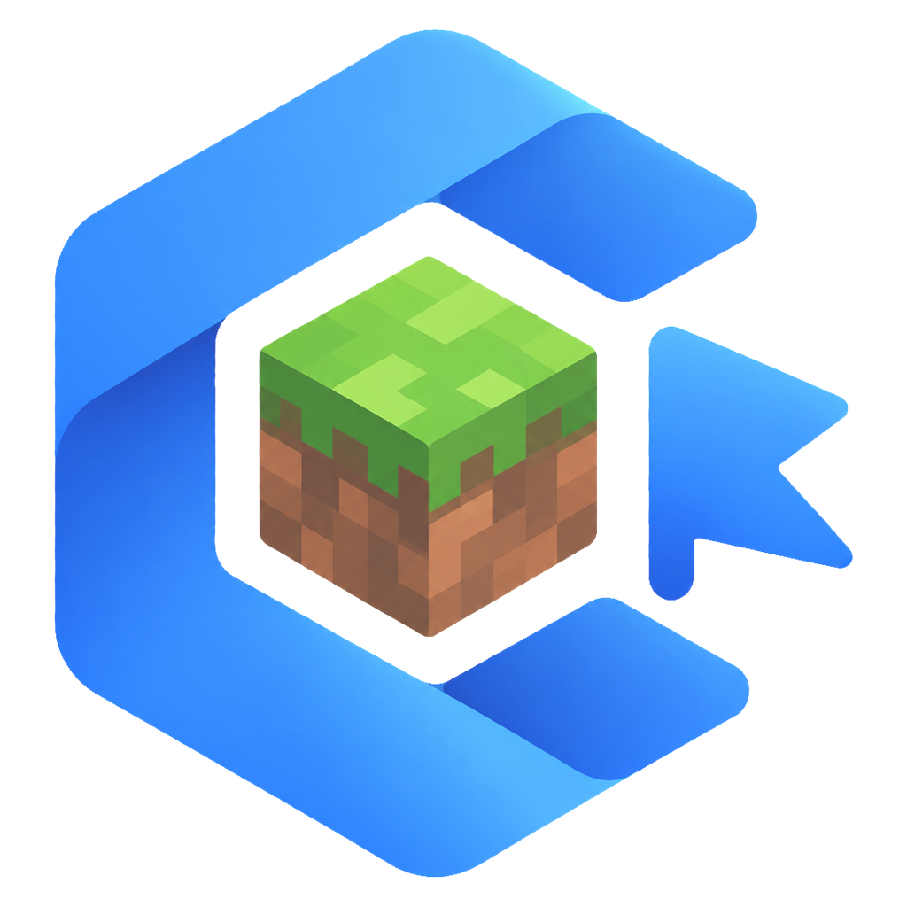
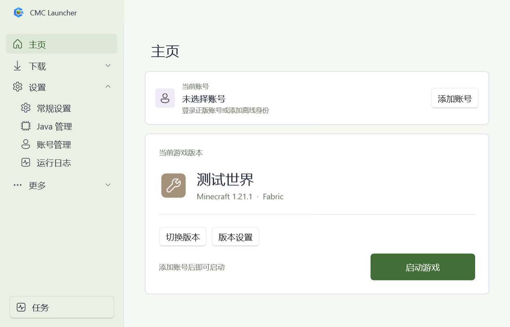

Manage your instances
Organize Minecraft versions and modpacks, then switch between the worlds you play.

CMCLauncher DownloadMINECRAFT JAVA · WINDOWS
A Windows launcher for Minecraft Java Edition.

MADE FOR YOUR WORLDS
Organize Minecraft versions and modpacks, then switch between the worlds you play.
Browse Minecraft versions and community projects, including mods, modpacks, and content packs.
Choose a game version, adjust launch options, and keep your game content organized.
BUILT AROUND YOU
A focused place to explore game versions and community content.
Built with WinUI 3, with light, dark, and custom themes.
Explore the code, follow development, or contribute to the project.
WINDOWS
CMCLauncher for Windows x64